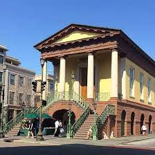
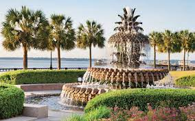
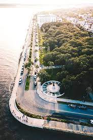

Welcome To U.S. Adventures, Charleston!
U.S. Adventures, Charleston is a small branch of U.S. Adventures focused on assisting you on having an amazing stay in Charleston, SC!
Charleston Landmarks
- The Market
- The Market is a known landmark and a must-visit while in Charleston! Local artists and craftspeople sell homemade crafts ranging from decorated soaps to handmade baskets, paintings, and even more!
- The Battery
- The Battery is a defensive sea wall which was a prominent location for the coastal defense during the Civil War. Everyone is welcome to walk on the wall as it stretches throughout the Charleston shore with a beautiful waterfront view.
- King Street
- One of Charleston’s most famous streets, King Street stretches across the city with a variety of stores and restaurants. King Street is divided into 3 districts: Antique District on Lower King, Fashion District on Middle King, and the Design District on Upper King.
- Pineapple Fountain
- The pineapple fountain is a stunning multi-layered fountain rumored to be a fountain of youth. Located in Waterfront park, the fountain faces both the beautiful historical Charleston homes as well as Cooper River!
- White Point Garden
- White Point Garden is a waterfront park at the peak of Charleston. From the park, you can see Fort Sumter on the water and also see a memorial for the Confederate Defenders of Charleston on the outskirts of the park. It is common to see weddings in this beautiful park year round because of its natural beauty.
 